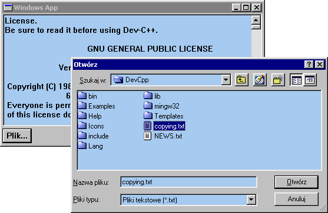

| << Poprzednia czêœæ kursu Spis Strona g³ówna Nastêpna czêœæ kursu >> |
Nie trzeba byæ koniecznie programist¹ by wiedzieæ, ¿e nie ma sensu wywa¿aæ otwartych drzwi. A programista to w dodatku skrajnie wygodne stworzenie i lubi wykorzystywaæ czyj¹œ pracê, jeœli tylko siê da. I s³usznie, bo gdyby ka¿dy musia³ wszystko robiæ na w³asn¹ rêkê i od zera, to nie by³oby postêpu ;-).
Kieruj¹c siê tymi m¹droœciami panowie z Microsoftu wykombinowali sobie, coby do³¹czyæ do swego systemu kilka predefiniowanych dialogów. I tak na przyk³ad prawie ka¿dy program odczytuje lub zapisuje jakieœ pliki - wczeœniej jednak u¿ytkownik musi podaæ nazwê i œcie¿kê do takiego pliku. Nie trzeba byæ specjalnie spostrzegawczym by skonstatowaæ, ¿e wiêkszoœæ programów u¿ywa do wyboru pliku jednego i tego samego okienka dialogwego. Podobnie ma siê rzecz z dialogiem wyboru czcionki czy koloru. Takie dialogi nosz¹ urocze miano common dialogs, co mo¿na przet³umaczyæ jako "wspólne" lub "powszechnie u¿ywane", a najlepiej jedno i drugie naraz :-).
W ramach praktycznej nauki zmajstrujemy sobie coœ w rodzaju windowsowego Notatnika - aplikacjê, która po wciœniêciu odpowiedniego przycisku bêdzie pokazywa³a dialog wyboru pliku, po czym bêdzie wczytywa³a wybrany przez u¿ytkownika plik do pola tekstowego. A wiêc coœ takiego:

Samo wywo³anie dialogu wyboru pliku na scenê to wyj¹tkowo proste zadanie:
|
OPENFILENAME ofn; //jeœli otwieramy plik do odczytu... GetOpenFileName(&ofn); //...lub GetSaveFileName(&ofn), jeœli zapisujemy |
Pewnie siê domyœlasz, ¿e struktura OPENFILENAME zawiera rozmaite przydatne opcje naszego dialogu. Tak wiêc taki sposób u¿ycia jej jak powy¿ej spowoduje w najlepszym wypadku otwarcie dialogu zupe³nie inaczej wygl¹daj¹cego, ni¿ sobie zaplanowaliœmy. Tak wiêc strukturê nale¿a³oby wype³niæ. Aby wype³niæ, musimy coœ niecoœ o niej wiedzieæ, wiêc rzuæmy okiem na szczegó³y (uwaga, jest ich doœæ sporo ;-)):
| Sk³adowa | Typ | Znaczenie |
|---|---|---|
| lStructSize | DWORD | Rozmiar struktury w bajtach |
| hwndOwner | HWND | Uchwyt okna-w³aœciciela dialogu, mo¿e byæ NULL |
| lpstrFilter | LPCTSTR | Filtr dla wyœwietlanych w dialogu plików, mo¿e byæ NULL |
| lpstrCustomFilter | LPTSTR | Bufor na filtr zdefiniowany przez u¿ytkownika w trakcie trwania dialogu |
| nMaxCustFilter | DWORD | Maksymalny rozmiar powy¿szego bufora |
| nFilterIndex | DWORD | Zawiera indeks filtra wybranego przez u¿ytkownika |
| lpstrFile | LPTSTR | Najwa¿niejszy element struktury - adres bufora, który bêdzie zawiera³ nazwê(-y) pliku(-ów) wybranego(-ych) przez u¿ytkownika |
| nMaxFile | DWORD | Maksymalny rozmiar powy¿szego bufora |
| lpstrFileTitle | LPTSTR | Adres bufora, który po zakoñczeniu dialogu zawiera tytu³ wybranego pliku (nazwê bez œcie¿ki dostêpu) |
| nMaxFileTitle | DWORD | Maksymalny rozmiar powy¿szego bufora |
| lpstrInitialDir | LPCTSTR | Startowy katalog dialogu (NULL - bie¿¹cy katalog) |
| lpstrTitle | LPCTSTR | Tytu³ dialogu (NULL - tytu³ domyœlny) |
| Flags | DWORD | Ró¿ne flagi :-) |
| nFileOffset | WORD | Indeks znaku w buforze lpstrFile, od którego zaczyna siê w³aœciwa nazwa (tytu³) pliku |
| nFileExtension | WORD | Jak wy¿ej, tylko w odniesieniu do rozszerzenia |
| lpstrDefExt | LPCTSTR | Domyœlne rozszerzenie pliku |
A to jeszcze nie wszystko, poda³em tylko najwa¿niejsze pola :D. Na szczêœcie nie musimy tego wszystkiego wype³niaæ jednoczeœnie. Dla œwiêtego spokoju zerujemy wiêc nasz¹ strukturê, coby siê upewniæ, ¿e nie ma w niej ¿adnych losowych œmieci, po czym ustawiamy pole z rozmiarem struktury na odpowiedni¹ wartoœæ:
|
ZeroMemory(&ofn, sizeof(ofn)); ofn.lStructSize = sizeof(ofn); |
Jeœli u¿ywasz Windows XP (a ze swych tajnych ¿róde³ wiem, ¿e przesz³o po³owa odwiedzaj¹cych moj¹ stronê go u¿ywa ;-)) albo 2000, to pole lStructSize ustawiasz na sizeof(OPENFILENAME).
Jad¹c dalej: pole hwndOwner wype³niamy a¿ po brzegi uchwytem do okna, które wywo³uje dialog wyboru pliku. Nastêpnie trzeba zdefiniowaæ filtr. Jest to ci¹g par ³añcuchów, które... Aaa, co bêdê siê sili³ na uczone formu³ki, najlepiej podam od razu przyk³ad takiego filtru:
Bitmapy (*.bmp)|*.bmp
Pliki tekstowe (*.txt)|*.txt
Dokumenty internetowe (*.htm; *.html)|*.htm;*.html
Wszystkie pliki|*.*
Teraz chyba ³apiesz ;-). Tak, filtr s³u¿y do wyœwietlania tylko plików danego rodzaju. Lewa czêœæ to opis filtru, czyli tekst, który pojawia siê w ComboBox-ie na dole dialogu. Prawa czêœæ to w³aœciwy filtr, czyli maska, sk³adaj¹ca siê najczêœciej z gwiazdki i rozszerzenia. Mo¿emy podaæ kilka masek oddzielonych œrednikiem, tak jak powy¿ej w przypadku plików HTML. Poszczególne pary filtrów powinno siê oddzielaæ znakami zerowymi, ja wypisa³em je w oddzielnych linijkach, dla lepszej czytelnoœci. Praw¹ czêœæ ka¿dej pary oddziela siê od lewej znakiem zerowym, ja u¿y³em powy¿ej znaku |. Na samym koñcu filtru dajemy podwójny znak zerowy.
Có¿, ca³e to filtrowanie mo¿e wygl¹daæ na bardzo skomplikowane, ale w istocie nie jest tak Ÿle. Przekonasz siê, kiedy zaczniesz sam to robiæ. Mo¿e zreszt¹ wystarczy ci spojrzeæ na ma³y przyk³adzik:
|
ofn.lpstrFilter = "Pliki tekstowe (*.txt)\0*.txt\0Wszystkie pliki\0*.*\0"; |
Okiem zwyk³ego cz³owieka jest to tak zwany szum informacyjny, okiem rasowego kodera jest to zupe³nie przejrzysty i czytelny filtr :-). Sekwencje ucieczki \0 to oczywiœcie terminalne znaki zerowe, które w wiêkszoœci przypadków oznaczaj¹ Absolutny Koniec Stringa, natomiast tutaj pe³ni¹ rolê separatorów, zaœ "prawdziwy" znak terminalny jest podwójny. Wprawdzie na koñcu widaæ tylko jedn¹ sekwencjê \0, ale jak wiemy, kompilator zawsze dostawia jeszcze jeden znak zerowy na koñcu ka¿dego stringa w instrukcji przypisania.
Pora zaj¹æ siê najwa¿niejszym, czyli nazw¹ pliku, bo przecie¿ w³aœnie po to, ¿eby j¹ uzyskaæ od u¿ytkownika, wyœwietlamy ca³y ten dialog. Potrzebny nam bêdzie na ni¹ bufor. Najlepiej go zrobiæ tak:
| char sNazwaPliku[MAX_PATH] = ""; |
U¿yliœmy systemowej sta³ej MAX_PATH, dziêki czemu mamy pewnoœæ, ¿e nasz dialog nie bêdzie u¿ywa³ zbyt d³ugich nazw œcie¿ek. Maksymalny rozmiar bufora oraz jego adres trzeba teraz wstawiæ do naszej struktury:
|
ofn.nMaxFile = MAX_PATH; ofn.lpstrFile = sNazwaPliku; |
Warto jeszcze ustawiæ domyœlne rozszerzenie. To dla czystej wygody u¿ytkownika, a zarazem jest to pewne zabezpieczenie przed lamerami - jak wiadomo, Windows ma opcjê ukrywania rozszerzeñ plików (z której oczywiœcie ¿aden szanuj¹cy siê Fachowiec nie korzysta, ale nie ka¿dy jest wszak Fachowcem ;-)), która to opcja powoduje czasem niez³e zamieszanie. Na wypadek wiêc, gdyby ktoœ wpisa³ sam¹ nazwê bez rozszerzenia, ustawienie rozszerzenia domyœlnego (które w takim wypadku zostanie automatycznie do³¹czone do wpisanej nazwy pliku) zwiêksza prawdopodobieñstwo unikniêcia b³êdu w rodzaju file not found:
|
ofn.lpstrDefExt = "txt"; |
Pozostaje ju¿ tylko zaj¹æ siê flagami. Oto najwa¿niejsze z nich:
| int CreateDialog(HINSTANCE hInstance, LPCTSTR lpTemplate, HWND hWndParent, DLGPROC lpDialogFunc) | |
| Sta³a | Znaczenie |
|---|---|
| OFN_ALLOWMULTISELECT | Pozwala na zaznaczanie wielu plików jednoczeœnie |
| OFN_CREATEPROMPT | W razie gdyby plik o wpisanej przez u¿ytkownika nazwie nie istnia³, powoduje, ¿e system pyta czy utworzyæ taki plik |
| OFN_EXTENSIONDIFFERENT | Okreœla, ¿e u¿ytkownik wybra³ plik o rozszerzeniu innym ni¿ domyœlne (o ile podano domyœlne, rzecz jasna) |
| OFN_FILEMUSTEXIST | Plik o podanej nazwie musi istnieæ. W przeciwnym wypadku zostaje wyœwietlone ostrze¿enie. Ustawienie tej flagi powoduje automatyczne w³¹czenie OFN_PATHMUSTEXIST (co jest doœæ logiczne ;-)) |
| OFN_HIDEREADONLY | Ukrywa pole "Tylko do odczytu", pokazywane czasem pod polem wyboru filtru |
| OFN_NOCHANGEDIR | Nie pozwala na zmianê katalogu |
| OFN_NODEREFERENCELINKS | Okreœla sposób traktowania skrótów (*.lnk). Jeœli ta flaga jest ustawiona, to dialog zwraca nazwê wybranego pliku *.lnk (czyli traktuje go jak zwyk³y plik), w przeciwnym wypadku zwraca nazwê pliku, do którego odnosi siê ten skrót |
| OFN_NONETWORKBUTTON | Ukrywa przycisk "Otoczenie sieciowe" |
| OFN_OVERWRITEPROMPT | Jeœli nasz dialog to "Zapisz jako...", to ta flaga sprawia, ¿e w przypadku próby nadpisania istniej¹cego pliku pokazywany jest komunikat z pytaniem, czy na pewno :-) |
| OFN_PATHMUSTEXIST | Nietrudno siê domyœliæ :-) |
| OFN_READONLY | Zaznacza pole "Tylko do odczytu" (jeœli u¿yjemy tej flagi przed pokazaniem dialogu) lub wskazuje, czy to pole zosta³o zaznaczone przez u¿ytkownika (jeœli u¿yjemy jej po pokazaniu dialogu) |
| OFN_SHOWHELP | Pokazuje przycisk "Pomoc" |
¯eby otworzyæ plik tekstowy i wyœwietliæ jego zawartoœæ w oknie, na pewno potrzebna nam bêdzie flaga OFN_FILEMUSTEXIST (bo nic dobrego siê nie stanie, jeœli spróbujemy otworzyæ nieistniej¹cy plik :-)). Nie zaszkodzi te¿ ustawiæ OFN_HIDEREADONLY. Tak wiêc wype³nienie pola Flags bêdzie wygl¹da³o nastêpuj¹co:
|
ofn.Flags = OFN_FILEMUSTEXIST | OFN_HIDEREADONLY; |
Mamy ustawione co trzeba, teraz musimy jeszcze wywo³aæ nasz dialog. Ju¿ wiemy, ¿e robi to funkcja GetOpenFileName lub GetSaveFileName. Jeœli jednak nie chcemy wyjœæ na kompletnych lamerów, musimy siê jeszcze zaj¹æ wartoœciami, zwracanymi przez te funkcje. Wynosz¹ one 0, jeœli u¿ytkownik nie wybra³ ¿adnego pliku (czyli albo wcisn¹³ 'Anuluj', albo zamkn¹³ dialog, albo spowodowa³ jakiœ b³¹d), natomiast jeœli wszystko jest w porz¹dku, to wartoœæ zwrócona jest niezerowa.
Co do b³êdów, nie jest tajemnic¹, ¿e we wszelkich kontaktach z plikami mo¿na ich spowodowaæ ca³e mnóstwo. Predefiniowane dialogi maj¹ wiêc swoj¹ w³asn¹ funkcjê do wykrywania b³êdów, nazywa siê ona CommDlgExtendedError. Dok³adny opis zwracanych przez ni¹ wartoœci znajdziesz jak zawsze w MSDN, natomiast najbardziej "popularne" b³êdy to:
| Sta³a | Znaczenie |
|---|---|
| 0 | U¿ytkownik nie wybra³ pliku |
| FNERR_BUFFERTOOSMALL | Wybrana przez u¿ytkownika nazwa pliku nie mieœci siê w buforze |
| FNERR_INVALIDFILENAME | Podana przed u¿ytkownika nazwa pliku jest nieprawid³owa |
Z w³asnych niezbyt mi³ych doœwiadczeñ wiem te¿, ¿e równie czêsto przy korzystaniu dialogów mog¹ wyst¹piæ ró¿ne "dziwne" b³êdy, które powoduj¹, ¿e dialog w ogóle siê nie wyœwietla. Na przyk³ad jeœli zapomnimy wyzerowaæ bufor podawany w lpstrFile, to funkcja GetOpenFileName wróci natychmiast z wartoœci¹ FNERR_INVALIDFILENAME bez wyœwietlania czegokolwiek. Warto zajrzeæ do MSDN do opisu funkcji CommDlgExtendedError i zapoznaæ siê tak¿e z list¹ b³êdów, rozpoczynaj¹cych siê przedrostkiem CDERR_.
Chyba wystarczy ju¿ o tych b³êdach, bo jeszcze coœ wykrakamy ;-). Przystêpujemy do realizacji naszego wielkiego zadania, czyli stworzenia naszej Jednej Szesnastej Notatnika :-). Jak zwykle do³o¿y³em wszelkich starañ, ¿ebym nie musia³ siê zbytnio staraæ i przedstawiê ci tylko najbardziej niezbêdne fragmenty kodu. Jak wczytaæ plik - ju¿ wiesz, wystarczy zrobiæ z tego osobn¹ funkcjê, nazwiemy j¹ sobie WczytajPlik. Bêdzie ona pobiera³a uchwyt okna, do którego ma wczytaæ tekst oraz nazwê pliku. Oczywiœcie szkieletowego kodu okienkowej aplikacji te¿ nie bêdê po raz setny wstawia³. Wszystko poza tymi dwiema rzeczami masz tutaj. Najpierw tworzenie kontrolki EDIT i ustawienie jej rozmiarów na rozmiar okna g³ównego, tego chyba nie muszê omawiaæ:
|
hEdit = CreateWindowEx(WS_EX_CLIENTEDGE, "EDIT", "Tu bêdzie tekst z pliku", WS_CHILD | WS_VISIBLE | WS_BORDER | ES_MULTILINE | WS_VSCROLL | ES_AUTOVSCROLL, 5,5,5,5, hwnd, NULL, hThisInstance, NULL); RECT rcClient; GetClientRect(hwnd, &rcClient); MoveWindow(hEdit, 0, 0, rcClient.right, rcClient.bottom-30, TRUE); |
No, mo¿e jedn¹ rzecz wyt³umaczyæ trzeba. U¿yliœmy tu funkcji MoveWindow. Jak sama nazwa wskazuje, s³u¿y ona do przemieszczania okna, ale przy okazji ustawia te¿ now¹ szerokoœæ i wysokoœæ dla tego okna. Tutaj chcemy powiêkszyæ EDIT-a na ca³y obszar klienta naszego g³ównego okna, zatem pobieramy wymiary tego ostatniego funkcj¹ GetClientRect. Ostatni argument funkcji MoveWindow to flaga, która okreœla, czy po zmianie wymiarów okno ma byæ odmalowane. Czemu nie, mo¿emy odmalowaæ, wiêc ustawiamy TRUE. Pamiêtaj, by zadeklarowaæ zmienn¹hEdit w zasiêgu globalnym.
Nastêpnie tworzymy przycisk, który bêdzie nam wywo³ywa³ dialog. Tu te¿ nie ma ¿adnych filozofii:
| CreateWindowEx(0, "BUTTON", "Plik...", WS_CHILD | WS_VISIBLE | WS_BORDER, 0, rcClient.bottom-27, 50, 25, hwnd, NULL, hThisInstance, NULL); |
Po trzecie (i najwa¿niejsze) - reakcja na przycisk, czyli pokazanie dialogu wyboru pliku, po czym wczytanie tego pliku i wywalenie jego cennej zawartoœci do pola tekstowego:
|
case WM_COMMAND: { OPENFILENAME ofn; char sNazwaPliku[MAX_PATH] = ""; ZeroMemory(&ofn, sizeof(ofn)); ofn.lStructSize = sizeof(ofn); ofn.lpstrFilter = "Pliki tekstowe (*.txt)\0*.txt\0Wszystkie pliki\0*.*\0"; ofn.nMaxFile = MAX_PATH; ofn.lpstrFile = sNazwaPliku; ofn.lpstrDefExt = "txt"; ofn.Flags = OFN_FILEMUSTEXIST | OFN_HIDEREADONLY; if(GetOpenFileName(&ofn)) { WczytajPlik(sNazwaPliku, hEdit); } } break; |
I to by by³o tyle o dialogach wyboru pliku.
| << Poprzednia czêœæ kursu Spis Strona g³ówna Nastêpna czêœæ kursu >> |